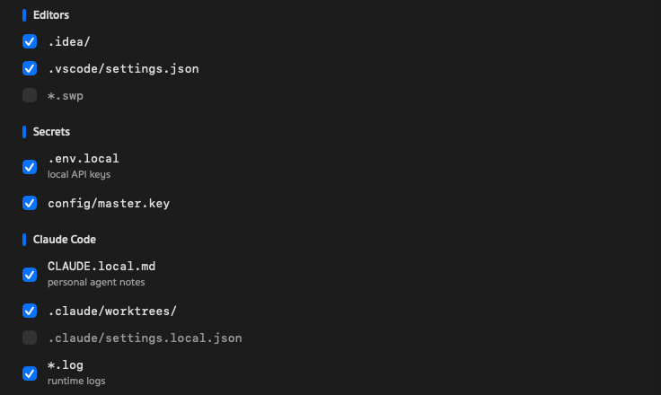
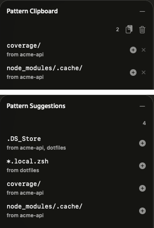
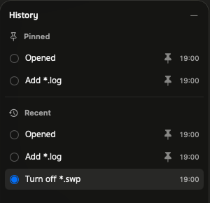

Every repository's exclude file, in one windowไฟล์ exclude ของทุก repository รวมไว้ในหน้าต่างเดียว
Open as many repositories as you like, keep their patterns tidy and move the good ones between them.เปิดได้หลาย repository จัดระเบียบ pattern ให้เป็นหมวดหมู่ แล้วคัดลอก pattern ดีๆ ข้ามไปใช้ repository อื่นได้
Sections you can dragแบ่งหมวดแล้วลากจัดเรียงได้
A blank line becomes a section break with an optional # heading — double-click it to rename. Drag patterns and sections into any order.บรรทัดว่างกลายเป็นตัวแบ่งหมวด ใส่ # หัวข้อได้ ดับเบิลคลิกเพื่อเปลี่ยนชื่อ ลาก pattern และหมวดไปเรียงตรงไหนก็ได้

A tab per repositoryหนึ่งแท็บต่อหนึ่ง repository
Drag tabs to reorder, jump with ⌘1 to ⌘9 or ⌃Tab, drop a folder from Finder to open another. Your tabs come back on relaunch.ลากสลับแท็บได้ กด ⌘1 ถึง ⌘9 หรือ ⌃Tab เพื่อสลับ ลากโฟลเดอร์จาก Finder มาวางเพื่อเปิดเพิ่ม เปิดแอปใหม่แท็บก็ยังอยู่
Keyboard firstใช้คีย์บอร์ดได้ทั้งหมด
Space turns patterns on or off, ⌫ deletes, Return edits, ⌥⌘1–7 opens a side panel.Space เปิด/ปิด pattern ⌫ ลบ Return แก้ไข ⌥⌘1–7 เปิดแผงด้านข้าง
Copy patterns between repositoriesคัดลอก pattern ข้าม repository
⌘-click or ⇧-click patterns, press ⌘C, switch tabs and paste. Only the missing ones are added. Pattern Suggestions lists what your other repositories ignore, one click each — both live in the side panel.กด ⌘ หรือ ⇧ แล้วคลิกเลือก pattern กด ⌘C สลับแท็บแล้ววาง เพิ่มเฉพาะตัวที่ยังไม่มี ส่วน Pattern Suggestions แสดง pattern ที่ repository อื่นใช้ กดเพิ่มได้ในคลิกเดียว ทั้งสองอยู่ในแผงด้านข้าง

Your file stays yoursไฟล์ของคุณยังเป็นของคุณ
Comments, blank lines and anything unusual are written back byte for byte. Import a .gitignore, export a copy or Preview Raw before you save.comment บรรทัดว่าง และบรรทัดแปลกๆ ถูกเขียนกลับเหมือนเดิมทุกไบต์ นำเข้า .gitignore ส่งออกสำเนา หรือกด Preview Raw ดูไฟล์จริงก่อนบันทึก
# Editors
.idea/
.vscode/settings.json
# Secrets
.env.local
#config/master.key
Go back any stepย้อนกลับได้ทุกขั้น
History keeps your last 30 edits. Click one to go back, pin the states you want to keep — the file as you opened it is pinned for you.History เก็บการแก้ไข 30 ครั้งล่าสุด คลิกเพื่อย้อนกลับ ปักหมุดสถานะที่อยากเก็บไว้ ไฟล์ตอนเปิดถูกปักหมุดให้แล้ว

Make it yoursปรับให้เป็นสไตล์คุณ
Liquid Glass on macOS 26 and Sukhumvit Set type. Light, Dark or System, 16 accent colours and 8 gradient themes.Liquid Glass บน macOS 26 และฟอนต์ Sukhumvit Set เลือก Light, Dark หรือตามระบบ สี accent 16 สี และธีม gradient 8 แบบ